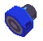

In the first Legends game, the Vacuum Arm is crafted from three parts, the Broken Motor, Broken Propeller and Broken Cleaner. With a
relatively cheap total upgrade cost of 10,500z, you won't be stressed for cash trying to upgrade this thing. In Legends 2, the weapon
is made from the Broken Motor and Broken Vacuum. The total cost is 126,000z, which largely consists of the rather hefty 100,000z upgrade.
Upgrading the Special stat simply gives the suction speed an upgrade.

The Vacuum Arm picks up nearby refractor shards, energy cubes, and special weapon
crystals that enemies dropped. The weapon is simple, yet indispensable. If left un-upgraded, it sucks zenny quite slowly, and it's range
isn't too great. These attributes can be upgraded, though, and it becomes a very effective tool. Fully upgraded, the Vacuum picks up
things from pretty much anywhere within visual range, and this includes behind your range of vision as well. With the special stat fully
upgraded, you'll suck things up pretty quickly; it takes no longer than a second to clean house.
This weapon is nearly indispensible when venturing through ruins. It's a quicker and easier way to collect zenny. It also allows you to
get zenny in places you couldn't normally pick it up. There are situations where zenny gets stuck in walls (MML2), and it's a lot easier
to use the vacuum than to repeatedly jump against a wall. It's also useful in situations where zenny may fall onto lava or other hazardous
floors. It also certainly makes zenny collecting much more bearable underwater.
Conclusively, I can't really see a weak point for this weapon. It does what it's supposed to do (quite well, I might add). You have to
be wise about where you carry this, though. I certainly wouldn't recommend you bring this into boss fights, or situations where you may
need extra firepower. Then again, with a good buster, you can take this is if you want some extra cash in your pocket. If anything,
upgrading this thing is more of an investment if anything, as it will quickly pay for itself. I give the Vacuum Arm a 10/10! Money
makes the world go-round! (Not really. xD)